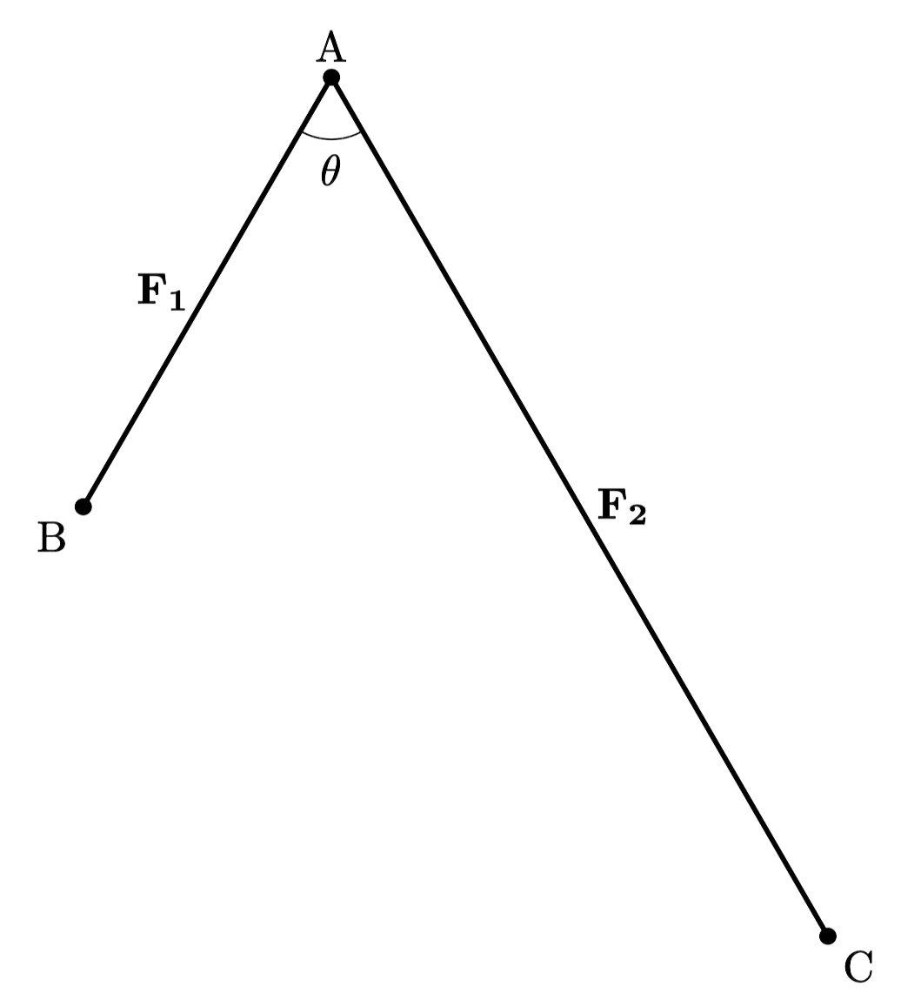
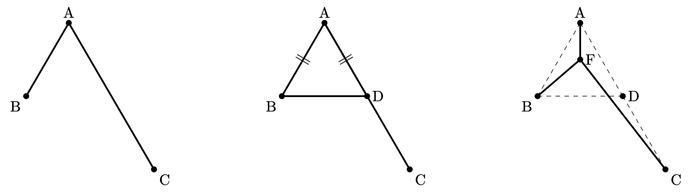

여러분이 대한민국의 첫 번째 길을 놓는 중대한 책임을 맡게 되었다고 상상해보겠습니다. 서울, 광주, 부산이라는 대한민국의 주요 도시 세 곳을 효율적으로 연결할 수 있는 최적의 도로망을 설계해야 합니다. 이 도로망은 단순히 세 도시를 잇는 것이 아니라, 국가의 경제 발전과 지역 간 균형을 이루는 데 중요한 역할을 할 것입니다.
그러나 이 임무에는 큰 제약이 따릅니다. 자원은 한정적이며, 도로를 건설할 수 있는 예산과 인프라는 제한되어 있습니다. 따라서 최대한 효율적인 경로를 찾아야 하며, 각 도시를 연결하는 거리와 비용을 최소화하는 것이 필수적입니다.
많은 사람들은 세 도시를 직선으로 쭉 연결하는 것이 가장 빠르고 효율적일 것이라 생각할 수 있습니다. 먼저 서울에서 광주로 연결되는 직선 거리는 km입니다. 다음으로, 광주에서 부산으로 이어지는 거리는 km입니다. 마지막으로, 부산에서 서울로 돌아오는 거리는 km입니다. 이 세 구간을 합치면 총 직선 거리는 km가 됩니다. 이 거리는 세 도시를 직접 연결했을 때의 최소 거리라고 할 수 있습니다.

그렇다면, 직선으로 연결하는 것이 정말로 최고의 선택일까요? 더 효율적인 경로가 존재하지 않을까요? 제한된 자원으로 최고의 결과를 도출하기 위해서는 단순히 세 도시를 직선으로 연결하는 방법 외에도, 보다 복잡한 최적화 과정을 고려해야 할 때가 있습니다. 예를 들어 대전을 경유하는 경로를 고려해 보겠습니다.

서울에서 대전까지의 직선 거리는 km입니다. 대전에서 광주까지의 거리도 동일하게 km이며, 부산에서 대전까지의 거리는 km입니다. 이 세 구간의 거리를 모두 합치면 총 km가 됩니다. 세 도시를 직접 연결했을 때의 총 거리인 km와 비교했을 때, 상당히 줄어든 거리입니다. 대전을 경유하는 방법은 단순한 직선 경로의 총합보다 효율적일 수 있는 가능성을 보여줍니다.
페르마-토리첼리 문제(Fermat-Torricelli Problem)
삼각형의 세 꼭짓점으로부터의 거리 합이 최소화되는 점을 찾는 것은 기하학적 최적화 문제로, 17세기부터 수학자들 사이에서 중요한 연구 주제로 다루어졌습니다. 페르마는 이 문제를 통해 최적화 문제에 대한 관심을 보여주었으며, 주어진 세 점에서의 거리 합이 최소가 되는 점을 찾는 문제를 토리첼리에게 제안했습니다. 토리첼리는 이 문제를 빠르게 해결하여 페르마에게 답변을 보냈고, 오늘날 페르마-토리첼리 문제라고 불립니다.1
![[CleanShot 2024-08-12 at 14.40.00@2x 1.png|https://www.geogebra.org/classic/apszfskt|500]]
페르마 포인트를 찾는 과정을 자세히 알아보도록 하겠습니다. 가장 큰 각의 크기가 보다 작은 내부의 점 에 대하여, 이 점에서 삼각형의 세 꼭지점 , , 까지의 거리의 합 가 최소가 되도록 하는 점 P$의 위치를 찾고자 합니다.
먼저, 를 점 를 중심으로 반시계 방향으로 회전시킵니다. 회전 후에 새롭게 생기는 삼각형에서, 원래의 점 에 대응하는 점은 , 점 에 대응하는 점을 이라 하겠습니다. 회전 변환은 길이를 유지하므로, , 입니다. 그리고 가 됩니다. 따라서, 와 는 정삼각형입니다.
그림에서 보듯이 회전 변환에서는 도형의 크기와 형태가 변하지 않기 때문에 길이가 보존되고, 와 는 정삼각형이므로, 의 길이 합은 의 길이 합과 같습니다.
의 길이가 최소가 되기 위해서는, 이 세 선분의 합이 라는 하나의 선분과 일치해야 합니다. 왜냐하면, 선분의 합이 최소가 되기 위해서는 가장 짧은 경로를 따라야 하므로, 시점인 점와 종점인 를 이은 직선 위에 세 선분이 위치해야하기 때문이죠.
이제 점 가 이동하면서, 의 길이가 최소가 되는 위치를 찾으면, 이때 점 가 바로 페르마 포인트 가 됩니다. 페르마 포인트에서는 가 정삼각형이므로, 삼각형의 외각 성질을 이용해 입니다.
마지막으로, 위의 과정을 삼각형의 다른 두 점에 대해서도 반복합니다. 같은 논리를 적용하여 최적의 점 를 찾으면 결국 삼각형의 각 변을 한 변으로 하는 정삼각형을 각각 그린 후, 정삼각형의 바깥 꼭지점과 내부의 마주보는 점을 연결하는 교점이 페르마 포인트가 되며, 이때 각 꼭지점에서 페르마 포인트로 이은 각이 것을 알 수 있습니다.
 만약 한 각의 크기가 보다 크다면 어떻게 될까요? 일반적인 삼각형에서 페르마 포인트는 삼각형 내부에 위치하며, 이 점에서 삼각형의 각 꼭짓점으로 그은 선분이 이루는 각은 모두 입니다. 하지만, 삼각형의 한 각이 보다 크면, 삼각형 내부에서 이러한 조건을 만족하는 점이 존재하지 않게 됩니다.
만약 한 각의 크기가 보다 크다면 어떻게 될까요? 일반적인 삼각형에서 페르마 포인트는 삼각형 내부에 위치하며, 이 점에서 삼각형의 각 꼭짓점으로 그은 선분이 이루는 각은 모두 입니다. 하지만, 삼각형의 한 각이 보다 크면, 삼각형 내부에서 이러한 조건을 만족하는 점이 존재하지 않게 됩니다.
만약 이면, 삼각형 내부의 모든 점 에서의 각 입니다. 따라서, 삼각형의 내부에서는 의 합이 최소가 되는 점이 존재하지 않게 됩니다. 그러나 점 가 꼭지점 로 이동하면 이 되고, 거리의 합 는 로 단순화되므로, 점 가 삼각형 내부의 다른 위치에 있을 때보다 더 작아집니다. 따라서 한 각이 보다 큰 삼각형에서는 가장 큰 각의 꼭지점이 페르마 포인트가 됩니다.
![[CleanShot 2024-08-12 at 14.43.26@2x 1.png|https://www.geogebra.org/classic/m5nswqb6|500]]
슈타이너 트리(Steiner Tree)
세 개의 점에서 페르마 포인트를 찾는 과정을 통해, 각 꼭짓점으로부터의 거리를 최소화하는 점을 알 수 있었습니다. 그런데 만약 네 개의 점이 주어졌다면 어떻게 해야 할까요? 세 점일 때는 비교적 간단한 해결책이 있었지만, 네 점의 경우 상황은 훨씬 복잡해집니다. 네 개의 점에서 최적의 연결점을 찾기 위해서는 다른 접근이 필요하며, 여기서 **슈타이너 점(Steiner point)**이라는 새로운 개념이 도입됩니다.
Tree
앞서 보았듯 기하학적 문제들은 종종 직관적으로 이해하기 쉬운 형태로 주어지지만, 문제를 해결하기 위해서는 보다 형식화된 구조로 변환하는 것이 필요합니다. 이러한 구조화된 표현이 바로 그래프입니다.
그래프는 점(꼭짓점)과 선(간선)으로 이루어진 구조로, 복잡한 기하학적 문제를 구조화된 형태로 표현할 수 있습니다. 그래프에서 이 슈타이너 점은 **트리(Tree)**의 형태로 표현될 수 있습니다. **트리(Tree)**란 사이클(cycle: 그래프 내에서 출발점과 도착점이 같은 닫힌 경로)이 없는 연결된 그래프입니다. 따라서 트리는 어떤 점에서 출발하여 동일한 점으로 돌아오는 경로가 존재하지 않고, 모든 노드가 직접 또는 간접적으로 연결되어 있습니다.
역학적 해석
트리는 인접 꼭짓점 사이의 거리 합을 잠재적 에너지로 하는 기계적 시스템으로 해석될 수 있습니다. 이러한 기계적 시스템은 트리가 상대적으로 최소 길이에 도달할 때 안정된 평형 상태에 있습니다. 예를 들어, 트리의 선들을 얼마만큼 늘리더라도 장력을 유지하는 고무 밴드로 생각할 수 있습니다. 그렇다면 주어진 점들은 고정된 상태이며, 슈타이너 점들은 자유롭게 움직일 수 있습니다. 이때 힘의 평형 위치를 슈타이너 점이라 생각할 수 있습니다.2

그렇다면, 슈타이너 트리에서는 어떤 두 직선도 미만의 각도로 만날 수 없습니다. 만약 두 선의 끼인각 가 로 만난다고 가정해보겠습니다. 슈타이너 트리에서 각 선을 당기는 힘은 평형을 이루어야하고, 이 힘은 슈타이너 트리의 최단 거리 조건을 유지하는 역할을 합니다. 두 벡터 과 가 이루는 각도를 라고 하겠습니다. 이때, 두 벡터의 합 는 벡터 삼각형에서 세 번째 변에 해당하며, 그 크기는 삼각법에 의해 다음과 같이 계산할 수 있습니다.
두 벡터의 크기가 로 동일하면 즉, 라고 하고, 코사인의 반각공식 을 이용하면 앞선 식은 단순화됩니다.
따라서, 두 힘 과 가 이루는 각도 가 작을수록 값이 커지며, 따라서 합성된 힘 가 증가한다는 것을 의미합니다. 이때, 라면, 두 선이 만나는 점에서 발생하는 힘이 즉, 기존의 벡터의 크기보다 과도하게 커지면서 트리의 다른 구성으로 이동하려는 경향이 생깁니다.
이때, 힘을 안정적으로 버텨줄 슈타이너 점을 추가하면, 더 짧고 안정적인 트리 구성으로 이동하게 됩니다. 따라서 슈타이너 트리에서 모든 선들은 최소 의 각도로 만나야 합니다. 그렇지 않으면 트리의 구조가 불안정해지고, 전체 길이를 줄일 수 있는 다른 구성이 나타날 수 있기 때문입니다. 반대로 보다 크다면 앞선 삼각형 예시에서 보았듯 내부에 슈타이너 점이 없으므로, 슈타이너 점에서 각 선은 로 만나게 됩니다.

슈타이너 점의 개수
앞선 성질에 의해 슈타이너 점에서 발생하는 힘의 합은 이고, 각 슈타이너 점에서 의 각도로 만납니다. 따라서 슈타이너 트리에서 슈타이너 점은 항상 세 개()의 간선과 연결됩니다.

트리는 항상 선 보다 하나 더 많은 점을 가집니다. 예를 들어, 개의 점과 개의 슈타이너 점을 가진 트리에서는 총 간선의 개수가 개가 됩니다. 를 차수가 인 점 즉, 개의 간선을 가지는 점의 수라 하면(단, 이상의 차수를 갖는 선은 없으므로, 이다.), 전체 선의 수는 모든 점에서 생기는 선의 수를 더한 값이므로 다음 식이 성립합니다.
점에 차수까지 곱해서 더한 값은 점의 수보다 크므로(슈타이너 트리에서 차수가 인 점이 있을 수도 있다.) 가 성립합니다. 따라서, 슈타이너 포인트는 기껏해야 개임을 알 수 있지요. 이때 등호가 성립하는 경우는 원래 점이 하나의 간선만을 가지는 경우입니다.
사각형에서의 슈타이너 점 찾기
슈타이너 트리에서 중요한 점은 슈타이너 점에서 발생하는 힘의 평형 상태를 이루기 위해 모든 슈타이너 점에서 연결된 세 개의 간선이 를 이루어야 한다는 것입니다. 이 점을 이용해서 사각형에서의 슈타이너 점을 찾아보겠습니다.
![[CleanShot 2024-08-12 at 14.48.21@2x 1.png|https://www.geogebra.org/classic/zjshxpyv|500]]
에 대하여 변 를 한 변으로 하는 정삼각형 와 정삼각형의 외접원을 그립니다. 외접원 위의 점 중 사각형 내부에 위치한 부분에 임의의 점 를 선택하면, 는 항상 가 됩니다. 정삼각형 의 외접원은 사각형의 외접원이기도 합니다. 외접원이 있는 사각형에서 마주보는 각의 합은 항상 이므로, 항상 를 갖는 의 대각인 는 항상 입니다. 따라서 의 한 슈타이너 점은 의 외접원 중 사각형 내부에 위치해야 합니다. 하지만 이 점들 중 아직 어떤 점이 슈타이너 점인지는 알 수 없습니다.
이번에는 사각형의 마주보는 변 에 대해 동일한 과정을 반복합니다. 첫 번째 정삼각형의 외접원과 두 번째 정삼각형의 외접원 위에 있는 점들 중에서 슈타이너 점을 결정하려면, 이 두 외접원에서 가능한 후보 점들이 서로 이루는 각이 가 되어야 합니다. 따라서 마주보는 정삼각형의 꼭지점을 서로 이으면, 각 선들이 를 이루도록 외접원 위의 두 점이 교차하게 됩니다. 이 교차점들이 바로 사각형 의 두 슈타이너 점입니다. 이러한 슈타이너 점들은 사각형 내에서 각 조건을 만족하는 특별한 위치로, 최적의 연결을 형성하게 됩니다.3
하지만 여기서 끝이 아닙니다. 사실, 동일한 방법으로 또 다른 슈타이너 트리를 구할 수 있습니다. 사각형의 마주보는 변들, 즉 와 를 사용하여 하나의 슈타이너 트리를 찾을 수 있었지만, 다른 마주보는 변들, 즉 와 를 사용해도 또 다른 슈타이너 트리가 생깁니다. 그렇다면 이 둘 중 어떤 트리가 더 최적일까요?
앞서 보았듯이 효율적인 슈타이너 트리는 각 슈타이너 점에서 연결되는 세 변의 각도가 가 되어야 합니다. 만약 두 트리 후보 중 하나에서 슈타이너 점에서의 각도가 에 가까운 반면, 다른 트리에서 이 조건이 충족되지 않는다면, 각도가 에 가까운 트리가 더 효율적일 가능성이 높습니다.
하지만 이 경우에는 두 트리 모두에서 슈타이너 점에서의 각도 조건이 만족되기 때문에, 이 조건을 비교하는 것만으로는 어느 쪽이 더 효율적인지 판단할 수 없습니다. 그렇다면, 두 슈타이너 트리 중 어느 쪽이 더 최적인지 결정하는 핵심은 무엇일까요? 바로 총 길이입니다. 최적의 슈타이너 트리를 결정하기 위해서는 두 트리의 각 간선의 길이를 합산하여, 더 짧은 길이를 가지는 트리를 선택해야합니다.4
다각형에서의 슈타이너 트리
![[CleanShot 2024-08-12 at 15.08.29@2x 1.png|https://www.geogebra.org/classic/wywannvx]]
그럼 오각형에서는 어떻게 될까요? 같은 방법으로 각도가 가 되는 점들을 찾고, 열심히 각 후보들 중에서 가장 효율적인 슈타이너 트리를 찾는 과정을 반복하면 됩니다. 이러한 해법은 정확한 답을 찾는 것은 가능할 지 몰라도, 더 복잡한 다각형에서는 과정이 매우 복잡해집니다. 각 슈타이너 점을 찾고 후보들을 비교하는 과정은 주어진 점에 따라 기하급수적으로 증가합니다.5
Dreyfus-Wagner 알고리즘
유한한 무향 그래프에서 슈타이너 문제를 해결하기 위해 주어진 개의 그래프 점을 연결하는 데 필요한 최소 총 길이의 간선 집합을 계산하면, 그래프에 모두 개의 노드가 포함되어 있을 경우, 이 알고리즘은 다음 시간에 비례하는 시간이 필요합니다.
하지만 근사 알고리즘을 사용하면, 이러한 복잡한 계산을 피하면서도 실용적인 해를 빠르게 얻을 수 있습니다. 주어진 다각형의 모든 변에 대한 최단 경로를 계산하고, 주어진 모든 꼭짓점을 최소한의 간선으로 연결하는 최소 스패닝 트리를 사용하여 필요에 따라 슈타이너 점을 추가하며 트리를 보완하는 방식을 사용할 수도 있죠.(Kou-Markowsky-Berman 알고리즘)6
이러한 방법을 사용하면 다항 시간 내에 최적해에 가까운 근사해를 매우 효율적으로 구할 수 있습니다. 이와 같은 근사 알고리즘은 복잡한 문제를 해결하는 데 매우 유용하며, 최적화 문제를 실질적으로 다룰 수 있게 해줍니다.
예를 들어, 도시에 새로운 통신망을 구축할 때, 여러 지역에 설치된 기지국을 최소한의 케이블로 연결하려고 합니다. 이때, 슈타이너 트리 개념을 적용하면 기존의 주요 지점 사이에 새로운 중간 연결점을 추가해 전체 케이블 길이를 줄일 수 있습니다. 결과적으로 데이터 전송 속도는 극대화되고, 전력 소모와 유지보수 비용은 크게 절감할 수 있습니다. 슈타이너 트리는 원래 기하학적 문제에서 출발했지만, 단순한 이론적 모델을 넘어, 실질적으로 중요한 문제를 해결해주죠.
우리는 삼각형의 페르마 포인트에서 출발해, 다각형에서의 슈타이너 트리 알고리즘까지 알아보았습니다. 기하에서 시작된 작은 질문은 현대 사회의 복잡한 시스템을 설계하는 실질적인 혁신을 이끌어 냈습니다. 여러분이 앞으로 마주할 복잡한 문제 속에서도, 기하적 사고가 해결의 문을 열어줄 수 있지 않을까요?
Footnotes
-
Gilbert, E. N.; Pollak, H. O. (1968). _Steiner Minimal Trees. ↩
-
D. Wells, The Penguin Dictionary of Curious and Interesting Geometry, London: Penguin, 1992. ↩
-
Ras, C., Swanepoel, K. & Thomas, D.A. Approximate Euclidean Steiner Trees. J Optim Theory Appl 172, 845–873 (2017). ↩
-
S. E. Dreyfus and R. A. Wagner, (1972) The Steiner problem in graphs. Networks, 1, 195–207. ↩
-
A Fast Algorithm for Steiner Trees - Missouri University of Science and Technology ↩